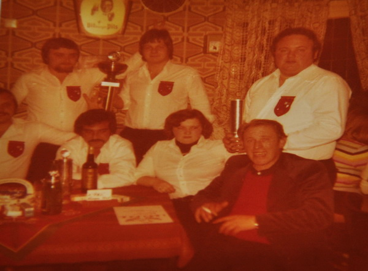
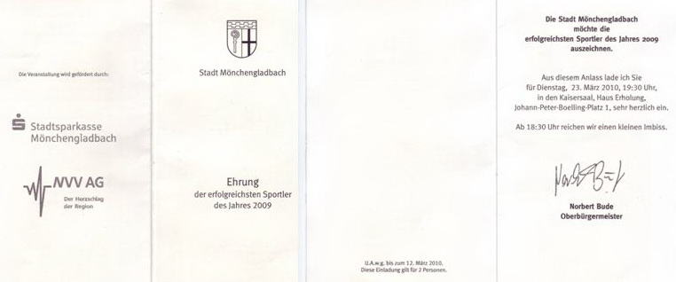

Der Verein stellt sich vor
Wir sind ständig auf der Suche nach neuen Mitgliedern für unseren Verein. Wenn Du Interesse am Pool Billard Sport hast, dann komm zu uns.
Werde Mitglied bei der Billardunion M.Gladbach - Kempen 1969/03 e.V.
Der Vorstand
1. Vorsitzende
Claudia Martens
2. Vorsitzender
Thomas Stappen
Schatzmeister
Volker Baum
Geschäftsführer

Frank Matten
Sportwart
Rakan Alsmaidai
Beitragsstruktur
40,- € Aktiv
30,- € Passiv
30,- € Rentner und Arbeitssuchende
15,- € Schüler
(Stand: 03. Juli 2018)
Volksbank Mönchengladbach, Dahlenerstraße. 63
BIC: GENODED1MRB
IBAN: DE29 3106 0517 2206 2840 16
Die Chroniken von Kempen
|
1969
1970 1971 1972 |
Am 08.11.1969 wurde in der Gaststätte von Heinz Martens, in Kempen Engerstraße 32 von einigen Pool-Billard Begeisterten der 1 PBC Martens gegründet. In den Vorstand wurden gewählt:
von links: Peter Franken PBC Anrath begrüßt Hans Flachsenberg 1.Vorsitzender: Hans Flachsenberg Kassierer: Karl Heinz Büssem 2.Vorsitzender und Schriftführer: Franz Büssem Im März trat Hans Flachsberg als 1.Vorsitzender zurück und Heinz Martens wurde zum 1. Vorsitzenden gewählt. In den Jahren 1969 bis 1973 wurden Vereinsmeisterschaften, Vereinsturniere und einige Freundschaftsspiele ausgetragen. Es gab kein festes Regelwerk und bei Clubkämpfen wurde immer nach der Hausregel des Ausrichters gespielt. |
|
1973
|
Beitritt in den Deutschen Pool Billard Verband, ab 01.08.1973 nahmen wir am Liga Spielbetrieb des Verbands für Mannschaft und Einzelspieler teil. (ab 1992 DBU) Der Verein wurde umbenannt, in 1.PBC Kempen 1969/73 e.V. Beachtliche Erfolge im Jugend, Damen, Herren und Seniorenbereich machten den Verein national und international bekannt. Mehrere Deutsche Meisterschaften und gute Platzierungen geben Zeugnis von einer guten Vereinsführung. Turniere in Deutschland und im benachbarten Ausland wurden von Mitgliedern dieses Vereins erfolgreich abgeschlossen. Der 1PBC Kempen richtete von 1975 an jährlich wohl eins der größten Pool Turniere mit 250 bis 320 Teilnehmern aus. Deutschland und Nachbarländer.
|
| 1974 | |
| 1975 | |
|
1976
|
Kempen hat die 3.Saison im PBVN sportlich zufrieden stellend beendet. Gute Ergebnisse bei der PBVN Einzel Meisterschaften wurden erkämpft, für die Deutsche Meisterschaft konnte sich keiner qualifizieren. Erfolgreich wurden mehrere Vereinsturniere beendet. |
|
1977
|
Erfolge von Mannschaften Aufstieg in die Oberliga des PBVN der 1.Mannschaft  von Links oben: F. Fickers, R. Hein, H. Martens, von Links unten: K.Jülichmanns, M. Strazzanti, B. Martens, Betreuer G. Föhles 1.Teilnahme an der Deutschen Meisterschaft in Kamp-Lintfort Der 9.Platz wurde belegt. 1.Platz für die Jugend Mannschaft beim Turnier in Geistenbeck (Mönchengladbach-Rheydt) |
|
1978
|
Zum ersten Mal wurde die Kreismeisterschaft für Mannschaft und Einzel ausgespielt. Die 1.Mannschaft belegte den 2.Platz und in den Einzelwettbewerben wurden mit Helga und Heinz Martens 2 Kreismeister gestellt. Im PBVN belegte der 1 PBC Kempen den 6.Platz bei der Bezirksverbands Meisterschaft. Die 1.Mannschaft belegte in der Oberliga Platz 5 der berechtigt zur Teilnahme an der Deutschen Meisterschaft. Der 11.Platz wurde errungen von 32 Mannschaften, die sich in Ihren Verbänden qualifiziert hatten. Die Damen Mannschaft belegte den 1.Platz beim Dreikönigsturnier in Neersen.
Wanderpokal der Kreissparkasse Grevenbroich (in der Mitte hintere Reihe Karl-Heinz Coumans) |
|
1979
|
Wurden wir 1. Stadtmeister von Kempen und Vize Kreismeister von Kreis Viersen. Verbandsjugendmeister, Frank Heesen. Kreismeisterin wurde Birgit Martens. Deutsche Meisterschaft in Baesweiler für Schüler und Jugend Deutscher Meister wurde zum ersten Mal Ralf Mund in der Schülerklasse. |
|
1980
|
Deutsche Meisterschaft 1980 Austragungsort Berlin Verbandsmeisterschaft des PBVN 14/1e 1.Platz Helga Martens DRE 1.Platz Birgit Martens DRE 3.Platz Helga Martens waren für die DM in Berlin 1980 qualifiziert. Die zum ersten Mal in Berlin ausgetragene Deutsche Damen Meisterschaft wurden für unsere beiden Damen zum größten Erfolg Ihres Poolspiels. Birgit wurde Deutsche Meisterin im DRE.
Birgit erhält vom Präsidenten des DPBB den Meisterpokal 1. Birgit Martens Kempen 2. Klara Lensing Kelze Ente 3. Rosi Brömstrupp Osnabrück 4. Angelika Wilms Rhein-Ruhr Sie hatte den 1 Deutschen Meistertitel für sich und den Verein errungen
Helga belegte den 4.Platz im 14/1 e..Ein großer Erfolg für den Verein und der Stadt Kempen Claudia Martens hatte sich für die Deutsche Jugendmeisterschaft in Pirmasens qualifiziert und belegte einen 7.Platz. Abstieg der 1.Mannschaft aus der Oberliga, Stadt und Kreismeistertitel konnten jedoch erspielt werden. Sie belegten den 2. Platz. Ostern spielten wir beim Osterturnier der Schwarzen 8 Berlin mit, und sehr erfolgreich. Die 1.Mannschaft belegte in der Verbandsliga Platz 2 und stieg wieder in die Oberliga auf. Friedhelm Fiekers wurde in die PBVN Auswahl berufen und spielte gegen den Rhein Ruhr Verband mit. |
|
1981
|
Verbandsmeisterschaft 14/1e 1.Platz Helga Martens DRE 3.Platz Helga Martens Uwe Holthausen erreichte bei der Verbandsmeisterschaft 3.Plazierungen die zur Teilnahme der Deutschen Meisterschaften berechtigten.
4er Mannschaftsturnier beim PBC Neersen Dreikönigen 1980 Jugend von Links: H. Bens, N. Fischer, Th. Jansen, und R. Schossau Bei der DM belegte er den 5.Platz, den 1.Platz beim Dreikönigsturnier in Neersen und beim Gehart Höger Gedächtnisturnier in Geistenbeck
. Der Verein richtete in der Jahnhalle in Kempen eines der größten Turniere in Deutschland zum 3mal mit größter nationalen und internationaler Beteiligung aus. Sabine Martens holte als 13jährige ungeschlagen unter 32 Teilnehmerinnen den 1.Platz in der Damen Klasse. Die Vertretung v. 1 PBC Klagenfurt erhielt den Ehrenpreis der Stadt Kempen. Die 1.Mannschaft belegte den 6.Platz unter 24 Teilnehmern. Der 1 PBC Kempen nahm an Turnieren Hörbranz Österreich und Klagenfurt teil.
Helga Martens erhält von Hans Stern, Geschäftsführer des Pool Verbands von Österreich den Pokal und Ehrenpreis von Klagenfurth Deutsche Meisterschaft in Wanheimerort-Duisburg. Für den Verein nahm nur Birgit Martens in der Disziplin 8 Ball als TV teil und belegte den 2.Platz. Als Deutsche Vizemeisterin kam Sie nach Hause. |
|
1982
|
Sabine Martens belegte bei den Schülern unter 8 Teilnehmer in der Endrunde (Gegner waren nur Jungs) den 1.Platz und qualifizierte sich für die Deutsche Meisterschaft Jugend. Jugend Verbandsmeister im 8 Ball, Michael Klockow, Uwe Holzhausen wurde vierter. Schüler 14/1 Platz 6 Sabine Martens. Der 1 PBC Kempen richtet wieder das in ganz Deutschland und Billard Europa bekannte Turnier aus. 530 Teilnehmer, in 3Disziplinen, aus 63 Vereinen sind gemeldet und an 16 Tischen wird an 3 Tagen in der Ludwig Jahn Sporthalle um die offene Stadtmeisterschaft von Kempen gespielt. Alle deutschen Spitzenspieler und innen maßen sich mit internationaler Konkurrenz. Für den 1 PBC Kempen war nicht viel zu gewinnen. Die 1.Mannschaft belegte Rang 3 genau wie in der Damenklasse Claudia Martens. Deutsche Jugendmeisterschaft in Kerpen PBVM 8 Ball Schüler Platz 8 Sabine Martens, 8 Ball Jugend Platz 5 Michael Klockow, 14/1 Jugend Platz 5 Uwe Holzhausen |
|
1983
|
Kempen gewinnt das Jubiläumsturnier des PBC Neersen in der Besetzung, Michael Heinz, Ralf Mund, Michael Klockow und K. Jülichmanns. Das Turnier in Cloppenburg gewann Michael Heinz vor Friedhelm Fiekers und bei den Damen gewann Claudia Martens. Helga holte den Titel im PBNV im Pokal E. Damen mit Qualifikation für DM
|
|
1984
|
Der 1 PBC Kempen feiert sein 15jähriges Bestehen. In einer Sportwoche wurden verschiedene Wettbewerbe ausgetragen. Am 02.11.spielt die 1.Mannschaft gegen ÜBC Rot Weiß Oberhausen.
Helga Martens gewinnt das größte Damenturnier der Zeit in Rheinhausen Die Sportwoche wurde mit einem Festabend beendet auf der mehrere Mitglieder geehrt wurden. Verband Einzelmeisterschaft Platz 1 an Andreas Kehder. Am Turnier zum 7. Mal veranstaltet um die offene Stadtmeisterschaft von Kempen sind 256 Einzelspieler startbereit. Den 3. Platz belegte vom Verein Georg Manske und Ralf Mund. Für die DM Jugend in Aschaffenburg qualifizierten sich; Andreas Kehder, Karsen Tillmanns und Ralf Mund. |
|
1985
|
Deutsche Meisterschaft in Aschaffenburg, Schüler 8 Ball Platz 1 Andreas Kehder Damen 8 Ball Platz 2 Claudia Martens, die Jugend Mannschaft belegte den 5.Platz
Deutsche
Meisterschaft 1985 |
|
1986 |
|
|
1987
|
Deutsche Meisterschaft in Kempen
1 PBC Kempen Ausrichter der DM 1987 für
Jugend und Erwachsene
Die in der Vereinsgeschichte wohl größte Herausforderung war wohl die Ausrichtung der gesamt Deutschen Meisterschaft 1987 für Jugend und Erwachsenen in der Ludwig Jahn Halle in Kempen Niederrhein. Als Ausrichter hatte der 1 PBC Kempen in allen Disziplinen einen Freiplatz.
In den Mannschaft Wettbewerben wurden folgende Plätze belegt.8 Ball Mannschaft Platz 21,Pokal Platz 24, Jugend Pokal Platz 9
Die Damen Auswahl des Verbands wurde Vizemeister und belegten bei der DM den 5. Platz, von Kempen spielten Helga, Sabine und Claudia Martens
Einzelwettbewerbe: Damen Pokal Platz 4 Claudia Martens,Platz 23 Helga Martens Jugend Pokal Platz 16 Andreas Kehder, Platz 19 Rüdiger Esser, Damen 8 Ball, Platz 12 Claudia Martens, Jugend 8 Ball, Platz 3 Andreas Kehder, Jugend 14/1, Platz 13 Andreas Kehder
|
|
1988
|
Deutsche Meisterschaft in Bad Münder
Jugend: 14/1 Platz 24 Andreas Kehder, Pokal: Platz 10Andreas Kehder, 8 Ball: Platz 16 Andreas Kehder
Damen: 14/1 Platz 5 Claudia Martens
Damen-Auswahl Mannschaft des PBVN wird Deutscher Meister, es spielten: Helga, Claudia und Sabine Martens, Birgit Übach und Sylvia Buschhüter |
|
1989
|
Bei der Ehrung der Stadt Kempen der erfolgreichsten Sportler 1989 wurden auch Sportler des 1 PBC Kempen geehrt. Das goldene Sportabzeichen erhielt für die Erinnerung des Deutschen Meistertitels 1988 Damen Mannschaft, Sylvia Büchhüter Claudia und Sabine Martens. Für die Vize Europameisterschaft der Damen 14/1e wurde Sylvia Buchhüter ebenfalls geehrt. Das 4er Mannschaftsturnier vom 1 PBC Leverkusen ausgerichtet gewann die Mannschaft v. 1 PBC Kempen mit Thomas Peters, Andreas Kehder, Ingo Schweden und Norbert Fischer, man konnte den 1.Preis 400,00 DM in Empfang nehmen. |
|
1990
|
Deutsche Meisterschaft in Selm Westfalen Damen Kombi Mannschaft: Platz 3 1 PBC Kempen
mit Claudia, Sabine und Helga Martens, Sylvia Buchhüter und Claudia Rausch Pokal Mannschaft: Platz 2 1 PBC Kempen mit Thomas Hölters, Oliver Stops Michael Huppertz und Frank Strerath. |
|
1991
|
1. Mannschaft belegte mit 37-3 Punkten Platz 1 in der NRW Oberliga und nimmt an der Aufstiegsrunde zur 2. Bundesliga teil. Leider wurde der Aufstieg in Bero-Center-Oberhausen ausgespielt nicht geschafft, Platz 5 war zu wenig. Damenmannschaft wird Landes Vizemeister und nimmt an der Deutschen Meisterschaft in Mannheim Teil. Bei der DM wurde Platz 5 (Damenmannschaft) belegt World 9-Ball Championschips-Tonrnament im Saherra Hotel Las Vegas Nevada. Bei 64 Teilnehmern belegte Ingo Schweden den 17. Platz. Bei den Damen sind 32 Teilnehmerinnen und Sylvia Buchhüter belegte ebenfalls Platz 17 Deutsche Meisterschaft in Mannheim Pokal Mannschaft Platz 3 1 PBC Kempen 69/ 03 e.V. |
|
1992
|
Der 1 PBC Kempen in Klagenfurt erfolgreich. Die 1.Mannschaft belegte den 1.Platz.
Ralf Mund war im Einzel sehr erfolgreich.
Platz 2 im 8er Ball, Platz 1 im 9er Ball, Platz 5 im 14/1e
Platz 5 im 9er Ball ging an Roland Najmann, In der Mannschaft spielten; Ralf Mund, Roland Najmann, Andreas Kehder und Dieter Frambach. Das Finale wurde mit 9:5 gegen Olympia München gewonnen. |
|
1993
|
Aufstieg der 1.Mannschaft in die 2.Bundesliga (20er Staffel) Die 1.Mannschaft ist mit 22-6 Oberliga Meister NRW geworden und sich für die 2. Bundesliga Aufstiegsrunde qualifiziert. Der Aufstieg wurde geschafft. Sylvia Buschhüter nimmt an der Europameisterschaft in Oslo teil. Die Damenmannschaft belegte bei der Landesmeisterschaft den 4.Platz und ist für die Deutsche Meisterschaft qualifiziert. Es spielten; Claudia und Sabine Martens so wie Martina Schorn-Schmidt. Snooker
Landesmeisterschaft Herren Einzel: 1.Platz Ralf Mund, 2.Platz Dieter Frambach Landesmeisterschaft Mannschaft des PBC Kempen belegte den 1.Platz und war somit für die Deutsche Meisterschaft in Mannheimqualifiziert. Für Kempen spielten; Ralf Mund, Dieter Frambach und Roland Najmann |
|
1994
|
Die 1.Mannschaft belegte den 3.Platz in der 2.Bundesliga Am 25. Januar Ralf Mund gewinnt das 9 Ball Masters von Mönchengladbach und kassierte 2222,00 DM und qualifizierte sich für die Deutsche Meisterschaft 1994. Die Spieler Dieter Frambach und Frank Scharbach die ebenfalls für den 2 Bundesligisten 1 PBC Kempen spielten unterlagen im ½ Finale |
|
1995
|
Die 1.Mannschaft PBC Kempen belegte in der 2 Bundesliga Nord den 2.Platz. Für PBC Kempen spielten; Oliver Stops, Frank Frambach, Michael Huppertz und Rüdiger Jesse. Damen 8 Ball Masters beim 1 PBC Anrath. Platz 1 für Claudia Martens v. 1 PBC Kempen, Sie besiegte im Finale Christine Wiechert v. PBF Krefeld 81. Claudia hatte bei der Verbandsmeisterschaft 1995 alle 4 Titel geholt und wurde bei der Verbandssiegerehrung entsprechend geehrt. Die Verbandssiegerehrung verbunden mit der Jubiläumsfeier 20Jahre PBVN wurde vom 1PBC Kempen in der Kolpinghalle in Kempen gefeiert. DM in Erkelenz 3.Platz für Roland Najmann im 9 Ball Senioren und 5.Platz beim 8 Ball 27.05.1995 Die Senioren Auswahl des PBVN wurde Deutscher Meister 1995 in der Auswahl spielten vom 1 PBC Kempen, Roland Najmann, Jürgen Ludewig und Michael Fehlberg.
1 PBC Kempen Damenmannschaft belegte den 5.Platz mit Claudia Martens Birgit Jülichmanns und Birgit Uebach. Ehrengäste des PBVN waren der Bürgermeister Karl Heinz Hermanns und der Präsident der DBU Wolfgang Rittmann, die dem 1 PBC Kempen Dank und Anerkennung aussprachen für die erstklassige Ausrichtung mit 3 Stunden Showprogramm in der bis auf den letzten Platz (500 Besucher) gefüllten Kolpinghalle. Der 1 PBC Kempen erhielt von der Stadt Kempen einen Wappenteller und von der DBU den Wimpel als Dank überreicht. |
|
1996
|
Deutsche Meisterschaft in Stolberg, Seniorenmannschaft 1.Platz für 1 PBC Kempen 1969/03 e.V. nach Siegen 6-2 gegen BSV Alsdorf, ¼ Finale 6-0 gegen PBC Lindenhort ½ Finale 6-0 gegen BV Kahl konnte auch das Finale mit 6-0 gegen PBC Listige Spitze (Düsseldorf) gewonnen werden. Für Kempen spielte; Roland Najmann, Jürgen Ludewig und Michael Fehlberg. Pokal Mannschaft, 5 Platz 1 PBC Kempen. ¼ Finale Niederlage durch Entscheidungsspiel 6-4 gegen PC Mörfelden (der spätere Deutsche Meister) Herren 8 Ball, Ralf Mund belegte den 5.Platz durch eine 9-3 Niederlage gegen Thomas Engert. Landesmeisterschaften, Pokal Mannschaft Platz 1 1.PBC Kempen 1969/ 73 e.V. 1. Mannschaft. Platz 2 1.PBC Kempen 1969/ 73 e.V. 3. Mannschaft. Seniorenmannschaft Platz 1 1.PBC Kempen 1969/ 73 e.V. 1. Mannschaft. Deutsche Meisterschaft Snooker 1996/97 in Bochum. Snooker Pokal Mannschaft 2.Platz 1 PBC Kempen mit Siegen von: 5-1 gegen BC Chemnitz, 5-2 gegen PSF Solingen, 5-2 gegen 1 PBC Fortuna RS, 5-2 gegen SVUS Dillingen War das Finale erreicht. Dieses wurde 5-4 gegen BF Barmer verloren. Für Kempen spielten; Thomas Hölters, Frank Strerath, Michael Helten und Boris Creischer. Thomas Hölters 1/8 Finalniederlage 3-1 gegen Helmut Prixl und belegte Platz 9. |
|
1997
|
Landesmeisterschaft, Pokal Mannschaft 1.Platz 1 PBC Kempen 2.Mannschaft. 3.Platz 1 PBC Kempen 1.Mannschaft. Damen Mannschaft 2.Platz 1 PBC Kempen. Senioren Mannschaft 1.Platz 1 PBC Kempen. Die 2.Mannschaft belegte in der BVNR Oberliga Platz 2. Die 1.Mannschaft belegte in der 2.Bundesliga Nord den 6.Platz. Deutsche Meisterschaft in Schaafheim. Seniorenmannschaft 2.Platz 1 PBC Kempen. 4.Platz Senioren Auswahl BVNR von PBC Kempen spielten; Roland Najmann, Benjamin Grevenrath und Michael Fehlberg
|
|
1998
|
Damen und Senioren Länderpokal in Erfurt. Je Platz 5 für die Auswahl des BVNR von 1 PBC Kempen spielten; Claudia Martens, Daniele Strunz, Benjamin Grevenrath, Michael Fehlberg Roland Najmann und Jürgen Ludewig. Deutsche Meisterschaft vom 28.07.98 bis 02.08.98 in Selm. Vom 1 PBC Kempen nahmen teil; Damenmannschaft, Seniorenmannschaft und Pokal Mannschaft. Jürgen Ludewig im 8 und 9 Ball, Roland Najmann im 8Ball, 9 Ball, 14/1e und Pokal. Senioren Klasse bei den Herren, Michael Huppertz im 8 Ball, 9 Ball, 14/1e und Pokal. 2.Platz für unsere Pokal Mannschaft. 5.Platz für unsere Damenmannschaft. 5.Platz für unsere Seniorenmannschaft 2.Bundesliga Nord, der 1 PBC Kempen belegte mit 5-23 Punkte den letzten Platz und sieg in die Oberliga des BVNR ab. Landesmeisterschaft, Snooker Pokal Mannschaft Platz 2 1 PBC Kempen 1, Platz 5 1 PBC Kempen 2, Pokal Mannschaft Platz 1 1 PBC Kempen1, Damen Mannschaft Platz 1 1 PBC Kempen 1, Oberliga Platz 4 1 PBC Kempen 2, Die 1.Mannschaft spielte in der 2.Bundesliga Nord ist als letzter abgestiegen. |
|
1999
|
Snooker Bundesliga
Die 1.Mannschaft belegte in der 1.Bundesliga den 6.Platz. Deutsche Meisterschaft in Lübeck. Pokal Mannschaft Platz 5 1 PBC Kempen. Senioren Mannschaft Platz 5 1 PBC Kempen |
|
2000 |
Landesmeisterschaft, Pokal Mannschaft Platz 3 1 PBC Kempen. Senioren Mannschaft Platz 4 1 PBC Kempen |
|
2001
|
Aufstieg zur 2.Bundesliga
Platz 13 für 1 PBC Kempen, 2mal 4-3 für die Gegner, BV Grafschafter Moers und PBC Fortuna Bexbach. Deutsche Meisterschaft vom 11.04.2001 bis 17.04.2001 in Willingen. Platz 17 Thomas Hölters verliert in der 1 Gewinnerrunde gegen Oliver Ortmann mit 125-26. Platz 5 Oliver Stops scheidet in der 2.Gewinner runde im Pokal gegen Thomas Engert aus Platz 25 2 Niederlagen 9-3 gegen Ralf Souquet und 9-7 gegen Ralf Eckert brachte für Oliver Stops den 25.Platz Platz 17 für Claudia Martens im 9 Ball ausgeschieden mit 7-6 in der 2.Verliererrunde. Platz 17 1 PBC Kempen Pokal Mannschaft Niederlage mit 5-3 gegen PBC Neumünster |
|
2002 |
|
|
2003
|
Neue Ära Gründung der Billardunion Mönchengladbach - Kempen 1969/ 03 e.V. Der Vorsitzende Heinz Martens des 1. PBC Kempen hatte zur ordentlichen Mitgliederversammlung alle Mitglieder und Interessierten eingeladen. Die wichtigsten Tagespunkte waren Verabschiedung einer neuen Satzung, neuer Vereinsname, Wahl eines neuen Vorstands und Vereinsaktivitäten. 18 Mitglieder waren dieser Einladung gefolgt und waren somit verantwortlich für folgende Beschlüsse: Die Satzung wurde beschlossen, der Verein trägt ab 01.07.2003 den Namen, “ Billard Union Mönchengladbach - Kempen 1969/ 03 e.V.“ Er wurde in das Vereinsregister beim Amtsgericht Mönchengladbach eingetragen. Der Sitz des Vereins ist Mönchengladbach. Der Verein ist Mitglied der zuständigen Sportfachverbände Stadtsportbund, Landessportbund. Der Vorstand wurde nach BGB § 26 laut Satzung gewählt, und zwar: 1. Vorsitzender 2.Vorsitzender Kassiererin Geschäftsführerin
Heinz, Martens Hans, Kirchhoff Claudia, Martens - Manske kom. Helga, Martens Der Verein nimmt mit: 5 Kombi Mannschaften, 1 Senioren Mannschaft, 1 Damen Mannschaft, 1 Jugend Mannschaft am Spielbetrieb des Pool Billard Verband Niederrhein ( PBVN ) und des Billard-Verband Niederrhein ( BVNR ) teil Aufteilung in Ligen Oberliga BVNR Mannschaft 1 + 2, Verbandsliga PBVN Mannschaft 3, Landesliga PBVN Mannschaft 4 + 5 Damen, Senioren und Jugendmannschaften Spielen im PBVN mit Qualifikation Zur Oberliga im BVNR mit dortiger Qualifikation zur Deutschen Meisterschaft Verbandsliga PBVN Damen Mannschaft, Jugend Mannschaft, Senioren Mannschaft, Pokal Mannschaft Die recht junge Billardunion kann bereits auf folgende Erfolge zurückblicken. Verbandsmeisterschaften ( PBVN ) Jugend: 1. Platz 8-Ball Sascha, Jülichmanns, 1. Platz 9-Ball Sascha, Jülichmanns, 1. Platz 14/1 Sascha, Jülichmanns Landesmeisterschaft. BVNR Jugend 1. Platz 8-Ball Sascha, Jülichmanns, 1. Platz 9-Ball Sascha, Jülichmanns, 1. Platz 14/1 Sascha, Jülichmanns Deutsche Jugendmeisterschaft in Bruchsal, 13. Platz 14/1 Sascha, Jülichmanns, 9. Platz 9-Ball Sascha, Jülichmanns Zum 1. Mal nahm Chantal Manske an der Jugend DM in Bruchsal teil, und konnte sich als 11 jährige in der B Jugend nicht behaupten, sie platzierte sich im unteren Mittelfeld. 2003 Verbandsmeisterschaft PBVN Herren 1. Platz Pokal Thomas, Hölters, 2. Platz 9-Ball Thomas, Hölters, 2. Platz 8-Ball Thomas, Hölters, 2. Platz 14/1 Thomas, Hölters, 3. Platz 8-Ball Frank, Strerath, 3. Platz 14/1 Frank, Strerath Damen 1. Platz 8-Ball Natali, Stürtzer, 1. Platz 9-Ball Natali, Stürtzer, 2. Platz 14/1Natali, Stürtzer, 3. Platz 14/1 Claudia, Martens-Manske Senioren 3. Platz 9-Ball Rainer, Jussen, Senioren 50 plus 1. Platz Kombi Hans, Kirchhoff, 3. Platz Kombi Heinz, Martens 1. Platz Damen Mannschaft, 3. Platz Jugend Mannschaft, 3. Platz Senioren Mannschaft, 2. Platz Super Cup 1. Mannschaft 3. Platz Super Cup 2. Mannschaft, 1. Platz 9 Ball Cup 1. Mannschaft, 2. Platz 9 Ball Cup 2. Mannschaft Landesmeisterschaft BVNR Damen 1. Platz 14/1 Natali, Stürtzer, 1. Platz9-Ball Natali, Stürtzer, 3. Platz Pokal Natali, Stürtzer, 1. Platz Pokal Claudia, Martens-Manske, 2. Platz8-Ball Claudia, Martens-Manske, 3. Platz14/1 Claudia, Martens-Manske Herren 2. Platz8-Ball Frank, Strerath, 3. Platz14/1 Thomas, Hölters, 3. Platz Pokal Thomas, Hölters Senioren 3. Platz9-Ball Rainer, Jussen Landesmeisterschaft - Oberliga 3. Platz1. Mannschaft, 5. Platz2. Mannschaft, 1. Platz Damen 1. Mannschaft, 3. Platz Pokal 1. Mannschaft Die Damenmannschaft qualifizierte sich für die Teilnahme an der Deutschen Meisterschaft Deutsche Meisterschaft in Brandenburg 9. Platz Damen 1. Mannschaft, 9. Platz Pokal Claudia, Martens-Manske, 5. Platz9-Ball Natali, Stürtzer |
|
2004
|
In der Saison spielte die Billard Union mit: 5 Kombi Mannschaften, 1Damen Mannschaft, 3 Senioren Mannschaften, 1 Jugend Mannschaft, 1 Snooker Mannschaft im Ligabetrieb des PBVN -Bezirksverband und BVNR Landesverband Zu Saisonbeginn wurde die 1. Mannschaft neu aufgestellt. Der aus Trier zu uns gekommene Billardspieler Ralf Mund war als Trainer und Spieler verpflichtet worden. Das Ziel war vorgegeben, Landesmeisterschaft und Qualifikation zur Bundesliga Aufstiegsrunde. In der 1. Mannschaft spielen Thomas Hölters, ( Spielführer ) Ralf Mund, Michael Helten, Micca Georgopulos und Frank Strerath. Landesmeisterschaft BVNR Jugend weiblich B. 1. Platz 8 Ball Chantal, Manske, 1. Platz9 Ball Chantal, Manske, 2. Platz14/1 Chantal, Manske, 2 Platz Jugend Mannschaft Deutsche Jugend Meisterschaft in Brandenburg 9. Platz Jugend Kombi Mannschaft, Jugend weiblich B, 5. Platz9 Ball Chantal, Manske, 9. Platz14/1 Chantal, Manske Verbandsmeisterschaft PBVN Damen: 2. Platz Kombi Natali, Stürtzer, 3. Platz Kombi Claudia, Martens-Manske Ladys: 2. Platz Kombi Martina, Menzel 1. Platz Kombi Thomas, Hölters, 2. Platz Kombi Ralf, Mund, 3. Platz Kombi Micca, Georgopulos, Senioren: 3. Platz Kombi Rainer, Jussen Senioren 50 plus: 3. Platz Kombi Hans, Kirchhoff Unsere Mannschaften belegten am Saisonende folgende Plätze Verbandsliga 3. Platz BU. Mg.-Ke. 69/03 e.V. 3. Mannschaft Aufsteiger zur Oberliga ( BVNR ) Landesliga 3. Platz BU. Mg.-Ke. 69/03 e.V. 4. Mannschaft Aufsteiger zur Verbandsliga, 4. Platz BU. Mg.-Ke. 69/03 e.V. 5. Mannschaft Senioren Liga 4. Platz BU. Mg.-Ke. 69/03 e.V. 3. Mannschaft, 5. Platz BU. Mg.-Ke. 69/03 e.V. 1. Mannschaft, 7. Platz BU. Mg.-Ke. 69/03 e.V. 2. Mannschaft Pokal Mannschaft 1. Platz Jugend Mannschaft, 1. Platz Damen Mannschaft, 1. Platz Snooker BU.Mg.-Ke. 1.Mannschaft 1. Platz BU. Mg.-Ke. 69/03 e.V. 1. Mannschaft, 3. Platz BU. Mg-Ke. 69/03 e.V. 2. Mannschaft Landesmeisterschaft BVNR Damen 2. Platz14/1 Claudia, Martens-Manske, 3. Platz14/1 Natali, Stürtzer, 2. Platz8 Ball Natali, Stürtzer, 3. Platz8 Ball Claudia, Martens-Manske, 2. Platz 9 Ball Natali, Stürtzer, 3. Platz9 Ball Claudia, Martens-Manske, 2. Platz Pokal Natali, Stürtzer, 3. Platz Pokal Claudia, Martens-Manske Ladys 2. Platz8 Ball Martina, Menzel Herren 1. Platz14/1e Thomas, Hölters, 2. Platz 14/1e Ralf, Mund, 4. Platz14/1e Micca, Georgopulos, 4. Platz 8 Ball Ralf, Mund, 2. Platz 9 Ball Micca, Georgopulos, 3. Platz 9 Ball Thomas, Hölters, 1. Platz Pokal Ralf, Mund, 2. Platz Pokal Thomas, Hölters Senioren 2. Platz8 Ball Rainer, Jussen Landesmannschaftsmeisterschaft Oberliga-Kombi 1. Platz BU. Mg.-Ke. 69/03 e.V. 1. Mannschaft, 5. Platz BU. Mg.-Ke. 69/03 e.V. 2. Mannschaft, 1. Damen Mannschaft 3. Platz Senioren Mannschaft, 2. Platz Pokal Mannschaft Deutsche Meisterschaft in Brandenburg Pokal Mannschaft 9. Platz BU. Mg.-Ke. 69/03 e.V. 1. Mannschaft Damen Mannschaft 5. Platz BU. Mg.-Ke. 69/03 e.V. 1. Mannschaft Die 1. Mannschaft spielte in der Oberliga eine hervorragende Rolle und bei nur 2 unentschiedenen Partien wurde die Saison mit 30 Punkten ( 5 Punkte Vorsprung zum 2. platzierten ) erfolgreich beendet Zur Aufstiegsrunde 2. Bundesliga in Chemnitz Anfang Juni hatte wir uns qualifiziert
Von links: Micca, Ralf, Thomas, Sascha, Michael Die Mannen um Thomas Hölters sollten es nun richten. Es spielten von links: Micca, Georgopulos, Ralf Mund, Thomas, Hölters ( Spielführer ), Sascha Jülichmanns und Michael Helten . 1. Runde: Die Mannschaft von Astoria Walldorf ( LV Hessen ) konnte mit 4:2 besiegt werden. 2. Runde: Eine Niederlage von 2:4 gegen PBC Phönix Hagen brachte uns in die Hoffnungsrunde. Nach Siegen 4:3 gegen PBC Fortuna Aachen und 4:1 gegen Bitterfeld besiegten wir die Mannschaft des 1 PBC Gera mit 4:3 somit war der Aufstieg zur 2. Bundesliga Nord geschafft.
Ein herzlicher Empfang durch die daheim gebliebenen Vereinsmitglieder wurde den erfolgreichen Spielern beschert und gefeiert wurde bis in den frühen Morgen. Weitere sportliche Erfolge der Billard Union Mönchengladbach-Kempen 1969/ 03 e.V. Niederrhein Cup für 2er Team
1. Platz Udo, Meyer und Michael, Helten, 1. Platz Mix-Team Claudia, Martens-Manske und Thomas, Hölters, 1. Platz Senioren-Team Rainer, Jussen und Kurt, Jülichmanns, Senioren Turnier 2004 des PBF Krefeld 81 e.V., 1. Platz8 Ball Peter, Noth, Damen Turnier 2004 des PBF Krefeld 81 e.V. 2. Platz8 Ball Chantal, Manske |
|
2005
|
Die Billard Union Mönchengladbach - Kempen 1969/ 03 e.V. startet in die neue Saison mit: 1 Bundesliga Mannschaft, 2 Oberliga Mannschaften, 1 Verbandsliga, 2 Landesliga Mannschaften, 1 Jugend Mannschaft, 1 Damen Mannschaft, 2 Senioren Mannschaften, 6 Pokal Mannschaften, 4 9 Ball Cup Mannschaften, 1 Snooker Mannschaft, Wir hoffen auf ein gutes abschneiden und dass keine Mannschaft absteigen muss, und sich die Damen- und Jugend Mannschaft für die Deutsche Meisterschaft qualifizieren. Das gleiche wünschen wir den Pokal- und Senioren Mannschaften, so wie gute Einzel Platzierungen die zur Teilnahme an den Deutschen Meisterschaften berechtigen. Damen 1. Platz 8 Ball Chantal, Manske, 1. Platz9 Ball Chantal, Manske, 1. Platz Pok.E. Chantal, Manske, 2. Platz Pok.E Claudia, Martens-Manske Senioren 1. Platz 8 Ball Roland, Burghoff, 1. Platz9 Ball Rainer, Jussen, 3. Platz Pok.E. Rainer, Jussen, 1. Platz14/1 Rainer, Jussen Herren 1. Platz 8 Ball Micca, Georgopulos, 2. Platz8 Ball Thomas, Hölters, 3. Platz8 Ball Sascha, Jülichmanns, 4. Platz8 Ball Frank, Strerath, 1. Platz9 Ball Udo, Meyer, 2. Platz9 Ball Sascha, Jülichmanns, 1. Platz Pok.E. Micca, Georgopulos, 2. Platz Pok.E. Frank, Strerath, 3. Platz Pok.E. Sascha, Jülichmanns, 4. Platz Pok.E. Boris, Creischer, 1. Platz14/1 Frank, Strerath, 2. Platz14/1 Boris, Creischer |
|
2006
|
Verbandsliga 5. Platz Bezirksliga 2. Platz 1. Platz8 Ball Pokal 2. Mannschaft, 3. Platz8 Ball Pokal 1. Mannschaft, 1. Platz2. Jugend Mannschaft, 2. Platz2. Jugend Mannschaft, 2. Platz 1. Damen Mannschaft, 2. Platz1. Senioren Mannschaft, 2. Platz 9 Ball Cup 2. Mannschaft, 4. Platz Super Cup 2. Mannschaft Damen 3. Platz Kombi Chantal, Manske Herren 1. Platz Kombi Thomas, Hölters, 2. Platz Kombi Michael, Helten, 3. Platz Kombi Boris, Creischer Senioren 50 plus 1. Platz Kombi Hans, Kirchhoff, 3. Platz Kombi Heinz Martens Damen 3. Platz 8 Ball Chantal, Manske Senioren 1. Platz 9 Ball Roland, Burghoff Herren 3. Platz 8 Ball Udo, Meyer, 4. Platz8 Ball Thomas, Hölters, 5. Platz8 Ball Nico, Seidler, 2. Platz9 Ball Michael, Helten, 3. Platz9 Ball Nico, Seidler, 1. Platz Pok.E. Sascha, Rath, 2. Platz Pok.E. Michael, Helten, 3. Platz Pok.E. Dennis, Stapel, 4. Platz Pok.E. Udo, Meyer, 7. Platz14/1 Rüdiger, Esser Senioren 50 plus 1. Platz 14/1 Hans, Kirchhoff, 4. Platz14/1 Heinz, Martens, 3. Platz Pok.E. Heinz, Martens, 4. Platz Pok.E. Hans, Kirchhoff, 2. Platz 8 Ball Hans, Kirchhoff, 3. Platz 8 Ball Heinz, Martens, 2. Platz9 Ball Hans, Kirchhoff, 5. Platz 9 Ball Heinz, Martens Landesmeisterschaft BVNR Damen 3. Platz14/ Chantal, Manske,2. Platz 19-Ball Chantal, Manske, 2. Platz8-Ball Chantal, Manske, 3. Platz Pokal Chantal, Manske Herren 2. Platz9-Ball Sascha, Jülichmanns, 4. Platz 14/1 Thomas, Hölters, 1. Platz Pokal Michael, Helten Pokal Mannschaft 1. Platz Billardunion MG-KE 2, 2. Platz Billardunion MG-KE 1, Damen Mannschaft 5. Platz Billardunion MG-KE, Senioren Mannschaft 5. Platz Billardunion MG-KE, Snooker Mannschaft 5. Platz Billardunion MG-KE Landesmeisterschaft - Oberliga 1. Platz Jugend 1. Mannschaft, 1. Platz 2. Mannschaft, 5. Platz Damen 1. Mannschaft, 5. Platz Senioren 1. Mannschaft, 2. Platz Oberliga 2. Mannschaft, 4. Platz Oberliga 1. Mannschaft, 5. Platz Snooker 1. Mannschaft Landesmeisterschaft – Snooker 1. Platz Jens, von Siemiontkowski, Jugend U19 und Jugend U21 qualifizierte sich für die Teilnahme an der Deutschen Meisterschaft in Bad Wildungen Pokal Mannschaft 1.und 2. Mannschaft Herren Michael, Helten, Boris, Creischer |
|
2007
|
Landesmeisterschaft BVNR Landesmeisterschaft Damen Snooker 2. Platz Chantal Manske mit 15 Jahren, 3. Platz Pokal Mannschaft, 3. Platz Senioren 1. Mannschaft, 2. Platz Damen 1. Mannschaft, 1. Platz Oberliga 1. Mannschaft |
|
2008
|
Verbandsmeisterschaft PBVN Ergebnisse Verbandsmeisterschaft 9-Ball Saison Ladies 2. Martens-Manske, Claudia BU M´gladbach/Kempen 69/03 e.V. Damen 2.Platz Martens-Manske, Claudia BU M´gladbach/Kempen 69/03 e.V. qualifiziert LM Senioren Herren 1.Platz Rütten, Markus BU M´gladbach/Kempen 69/03 e.V. qualifiziert LM 3.Platz Halfpapp, Alexander BU M´gladbach/Kempen 69/03 e.V. qualifiziert LM 4.Platz Brudermanns, Maximilian BU M´gladbach/Kempen 69/03 e.V. qualifiziert LM Senioren Ü 50 Ergebnisse Verbandsmeisterschaft 8-Ball Saison Ladies Damen 1.Platz Martens-Manske, Claudia BU M´gladbach/Kempen 69/03 e.V. qualifiziert LM Senioren Herren 3.Platz Brudermanns, Maximilian BU M´gladbach/Kempen 69/03 e.V. qualifiziert LM 4.Platz Halfpapp, Alexander BU M´gladbach/Kempen 69/03 e.V. qualifiziert LM 5.Platz Creischer, Boris BU M´gladbach/Kempen 69/03 e.V. qualifiziert LM Senioren Ü 50 3. Platz Martens, Heinz BU M´gladbach/Kempen 69/03 e.V. 5. Platz Kirchhoff, Hans BU M´gladbach/Kempen 69/03 e.V. Ergebnisse Verbandsmeisterschaft 8-Ball Pokal Saison Ladies Damen Senioren 2.Platz Helten, Michael BU M´gladbach/Kempen 69/03 e.V. qualifiziert LM Herren 2.Platz Hölters, Thomas BU M´gladbach/Kempen 69/03 e.V. qualifiziert LM 3.Platz Halfpapp, Alexander BU M´gladbach/Kempen 69/03 e.V. qualifiziert LM 5.Platz Brudermanns, Maximilian BU M´gladbach/Kempen 69/03 e.V. qualifiziert LM Senioren Ü 50 3. Platz Kirchhoff, Hans BU M´gladbach/Kempen 69/03 e.V. 4. Platz Martens, Heinz BU M´gladbach/Kempen 69/03 e.V. Ergebnisse Verbandsmeisterschaft 14/1e Saison 2007/2008 Ladies Damen Martens-Manske, Claudia BU M´gladbach/Kempen 69/03 e.V. qualifiziert LM Senioren 4.Platz Göbbels, Frank BU M´gladbach/Kempen 69/03 e.V. qualifiziert LM Herren 4.Platz Creischer, Boris BU M´gladbach/Kempen 69/03 e.V. qualifiziert LM 5.Platz Halfpapp, Alexander BU M´gladbach/Kempen 69/03 e.V. qualifiziert LM Senioren Ü 50 Landesmeisterschaft BVNR Ergebnisse Landesmeisterschaft 9-Ball Saison 2007/2008 Ladies 2. Martens-Manske, Claudia BU M´gladbach/Kempen 69/03 e.V. Damen 2. Manske, Chantal BU M´gladbach/Kempen 69/03 e.V. 3. Hendler, Jeannine BU M´gladbach/Kempen 69/03 e.V. 5. Martens-Manske, Claudia BU M´gladbach/Kempen 69/03 e.V. Senioren 4. Göbbels, Frank BU M´gladbach/Kempen 69/03 e.V. 6. Helten, Michael BU M´gladbach/Kempen 69/03 e.V. Herren 4. Halfpapp, Alexander BU M´gladbach/Kempen 69/03 e.V. Ergebnisse Landesmeisterschaft 8-Ball Saison 2007/2008 Ladies 1. Martens-Manske, Claudia BU M´gladbach/Kempen 69/03 e.V. qualifiziert für DM Damen 1. Manske, Chantal BU M´gladbach/Kempen 69/03 e.V. qualifiziert für DM 4. Hendler, Jeannine BU M´gladbach/Kempen
69/03 e.V. Senioren 2. Helten, Michael BU M´gladbach/Kempen 69/03 e.V. Herren 1. Hölters, Thomas BU M´gladbach/Kempen 69/03 e.V. qualifiziert für DM 5. Halfpapp, Alexander BU M´gladbach/Kempen 69/03 e.V. Ergebnisse Landesmeisterschaft 8-Ball-Pokal Saison 2007/2008 Ladies 3. Martens-Manske, Claudia BU M´gladbach/Kempen 69/03 e.V. Damen 2. Manske, Chantal BU M´gladbach/Kempen 69/03 e.V. qualifiziert für DM 5. Martens-Manske, Claudia BU
M´gladbach/Kempen 69/03 e.V. Senioren 1. Helten, Michael BU M´gladbach/Kempen 69/03 e.V. qualifiziert für DM Herren 1. Halfpapp, Alexander BU M´gladbach/Kempen
69/03 e.V. qualifiziert für DM Ergebnisse Landesmeisterschaft 14/1e Saison 2007/2008 Ladies 4. Martens-Manske, Claudia BU M´gladbach/Kempen 69/03 e.V. Damen 1. Manske, Chantal BU M´gladbach/Kempen 69/03 e.V. qualifiziert für DM 3. Hendler, Jeanine BU M´gladbach/Kempen 69/03 e.V. 5. Martens-Manske, Claudia BU M´gladbach/Kempen 69/03 e.V. Senioren 1. Helten, Michael BU M´gladbach/Kempen 69/03 e.V. qualifiziert für DM Herren 5. Halfpapp, Alexander BU M´gladbach/Kempen 69/03 e.V. 7. Hölters, Thomas BU M´gladbach/Kempen 69/03 e.V. Qualifiziert für Deutsche Meisterschaft Damenmannschaft Qualifiziert für die DM 2008 Ladies Martens-Manske, Claudia BU M´gladbach/Kempen 69/03 e.V. qualifiziert im 8-Ball und 9-Ball Damen Manske, Chantal BU M´gladbach/Kempen 69/03 e.V. qualifiziert im 8-Ball Pokal, 14/1e, 8-Ball und 9-Ball Hendler, Jeaninne BU M´gladbach/Kempen 69/03 e.V. qualifiziert im 9-Ball Senioren Helten, Michael BU M´gladbach/Kempen 69/03 e.V. qualifiziert im 8-Ball Pokal, 14/1e und 8-Ball Herren Hölters, Thomas BU M´gladbach/Kempen 69/03 e.V. qualifiziert im 8-Ball Halfpapp, Alexander BU M´gladbach/Kempen 69/03 e.V. qualifiziert 8-Ball Pokal
01.11.2008 bis 09.11.2008 2008 Deutsche Billard-Meisterschaften im Einzel und Mannschaft Unsere Damenmannschaft belegte den 5. Platz Ladies Martens-Manske, Claudia BU M´gladbach/Kempen 69/03 e.V. 13.Platz im 8-Ball Martens-Manske, Claudia BU M´gladbach/Kempen 69/03 e.V. 5.Platz im 9-Ball Damen Manske, Chantal BU M´gladbach/Kempen 69/03 e.V. 9.Platz im 8-Ball Pokal Manske, Chantal BU M´gladbach/Kempen 69/03 e.V. 13.Platz im 14/1e Manske, Chantal BU M´gladbach/Kempen 69/03 e.V. 13.Platz im 8-Ball Manske, Chantal BU M´gladbach/Kempen 69/03 e.V. 5.Platz im 9-Ball Hendler, Jeaninne BU M´gladbach/Kempen 69/03 e.V. 5.Platz im 9-Ball Senioren Helten, Michael BU M´gladbach/Kempen 69/03 e.V. 5.Platzt im 8-Ball Pokal Helten, Michael BU M´gladbach/Kempen 69/03 e.V. 17.Platz im 14/1e Helten, Michael BU M´gladbach/Kempen 69/03 e.V. 25.Platz im 8-Ball Herren Hölters, Thomas BU M´gladbach/Kempen 69/03 e.V. 17.Platz im 8-Ball Pokal Halfpapp, Alexander BU M´gladbach/Kempen 69/03 e.V. 17.Platz im 8-Ball Pokal Hölters, Thomas BU M´gladbach/Kempen 69/03 e.V. 25.Platz im 8-Ball
|
|
2009
|
 |
| 2010 | |
|
2011
|
1. Platz Kevin Silva Männlich A (Landesmeister)1. Platz Richard JungMännlich B (Landesmeister) 3. Platz Adriana Manske Weiblich B Landesmeisterschaft Jugend 10 Ball Einzel 12.12.2010 "in Geldern" 3. Platz Kevin Silva Männlich A 2. Platz Richard Jung Männlich B 3. Platz Adriana Manske Weiblich B Landesmeisterschaft Jugend 14/1 Einzel 28.11.2010 "in Mönchengladbach" 2. Platz Kevin Silva Männlich A 2. Platz Richard Jung Männlich B 2. Platz Adriana Manske Weiblich B Landesmeisterschaft Jugend 8-Ball Einzel 16.01.2011 "in Geldern" 3. Platz Kevin Silva Männlich A Landesmeisterschaft Jugend 9-Ball Einzel 23.01.2011 "in Viersen" 2. Platz Tobias Bongers im 14/1 Männlich B Deutsche Meisterschaft am 27.04.2011 in Bad Wildungen 2. Platz Kadir Türkü Billardunion Mönchengladbach-Kempen 1969/03 e.V. 3. Platz Alexander Halfpapp Billardunion Mönchengladbach-Kempen 1969/03 e.V. Landesmeisterschaft Herren Kader 10-Ball Einzel 22.05.2011 "in Viersen" 1. Platz Claudia Martens-Halfpapp Teilnahme an der DM Billardunion Mönchengladbach-Kempen 1969/03 e.V. Landesmeisterschaft Ladys Kader 10-Ball Einzel 22.05.2011 "in Krefeld" 2. Platz Chantal Manske Billardunion Mönchengladbach-Kempen 1969/03 e.V. Landesmeisterschaft Damen Kader 10-Ball Einzel 02.06.2011 "in Mönchengladbach" 1. Platz Chantal Manske Teilnahme an der DM Billardunion Mönchengladbach-Kempen 1969/03 e.V. 2. Platz Jeaninne Hendler Billardunion Mönchengladbach-Kempen 1969/03 e.V. Landesmeisterschaft Damen Kader 9-Ball Einzel 05.06.2011 "in Geldern" 1. Platz Chantal Manske Teilnahme an der DM Billardunion Mönchengladbach-Kempen 1969/03 e.V. Landesmeisterschaft Damen Kader 14/1e Einzel 12.06.2011 "in Mönchengladbach" 3. Platz
Tobias Bongers im 14/1 Männlich B 3. Platz
Tobias Bongers im 8-Ball Männlich B
Europameisterschaft Jugend vom 30.07.2011 bis 07.08.2011 "im Alvisse Parc Hotel Luxemburg" 1. Platz Chantal Manske Billardunion Mönchengladbach-Kempen 1969/03 e.V. Landesmeisterschaft Damen Kader 8 Ball Einzel 11.09.2011 "in Krefeld"
Chantal Manske und Tobias Bongers von der Billardunion Mönchengladbach-Kempen 1969/03 e.V. haben dazu beigetragen. Der Billard-Verband Niederrhein hat den diesjährigen Alois-Metzinger-Cup 2011 gewonnen. 1. Platz
Tobias
Bongers
Landesmeisterschaft Jugend männliche A-Kader
2. Platz
Adriana
Manske
Landesmeisterschaft Jugend weibliche B-Kader
Deutsche Meisterschaft Damen
1. Platz Chantal Manske Billardunion Mönchengladbach-Kempen 1969/03 e.V.
1. Platz Adriana Manske Billardunion Mönchengladbach-Kempen 1969/03 e.V. Landesmeisterschaft Jugend weiblich B-Kader 10 Ball Einzel 20.11.2011 " in Geldern " 1. Platz
Tobias
Bongers
Landesmeisterschaft Jugend männliche A-Kader
1. Platz Adriana Manske Billardunion Mönchengladbach-Kempen 1969/03 e.V.
Landesmeisterschaft Jugend weiblich B-Kader
1. Platz
Landesmeisterschaft Jugend männliche A-Kader
1. Christmas 10 Ball - Cup Am 26.12.2011 hat die Billardunion zum 1. Christmas 10 Ball Cup eingeladen und das Teilnehmerfeld auf 32 Spieler/innen festgelegt. Chantal, die sich um die Ausschreibung kümmerte, hat gute Arbeit geleistet und ein spielerisch hochwertiges Teilnehmerfeld zusammen gestellt. Spieler aus der 1. und 2. Bundesliga sowie Regionalliga gingen an den Start und jeder wollte sich die Sportförderpreise von 320 €, 192 € und 128 € sichern. Ein Teilnehmerfeld was jederzeit für spannende Paarungen sorgte, wurde von einigen Sportlern der Billardunion und von Vereinen der näheren Umgebung vervollständigt. Chantal versuchte sich ebenfalls und belegte einen 5. Platz Die Platzierungen: 1. Platz: Marko Vogel vom PBC Trier (1. Bundesliga)
2. Platz: Martin Steinlage vom BC Colours Benrath (Regionalliga) 3. Platz: Michael Popp vom 1. BSC Marl 1958/74 e.V. 4. Platz: Christian Cüsters vom BC Übach Palenberg
Die einzelnen Ergebnisse ab dem Viertelfinale: Ein sportlich und kameradschaftliches Turnier war am späten Abend zu Ende und die 1. Vorsitzende der Billardunion Claudia Martens-Halfpapp konnte die Sportförderpreise an die Gewinner übergeben. Ein solches hochklassiges Turnier ist wiederholungsbedürftig. "Auf den 26. Dezember 2012 zum 2. Christmas 10 Ball- Cup |
|
2012
|
|
|
2013
|
|
|
2014
|
|
|
2015
|
|
|
2016
|
|


Fickers%20schaut%20zu%20wie%20Michael%20Heinz%20kugel%20um%20Kugel%20versenkt.jpg)


Einmarsch%20der%20Verbaende.jpg)